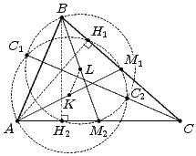

Three circles are constructed on a triangle, with the medians of the triangle forming the diameters of the circles. It is known that each pair of circles intersects. Let $C_{1}$ be the point of intersection, further from the vertex C, of the circles constructed from the medians $AM_{1}$ and $BM_{2}$. Points $A_{1}$ and $B_{1}$ are defined similarly. Prove that the lines $AA_{1}$, $BB_{1}$ and $CC_{1}$ intersect at the same point.
Consider circles constructed with diameters as the medians $AM_{1}$ and $BM_{2}$ of the triangle ABC. Let $C_{1}$ and $C_{2}$ be the points of intersection of these circles $($see the figure below$)$.
Let $H_{1}$ and $H_{2}$ be the intersection points of these circles with the sides BC and AC, respectively, of the triangle. Then $\angle $AH_1M_1$ = $\angle $BH_{2}M_{2}$ = 90$^{\circ}$, because they are based on diameters, and therefore $AH_{1}$ and $BH_{2}$ are the heights of the triangle ABC. The triangles CAB and $CH_{1}H_{2}$ are similar, hence, $\frac{CH_{1}}{CH_{2}}$ = $\frac{AC}{BC}$ = $\frac{CM_{2}}{CM_{1}}$ that is, $CM_{2} \times CH_{1}$ = $CM_{2} \times CH_{2}$. This means that the point C lies on the radical axis of the indicated circles, that is, on the line $C_{1}C_{2}$.
Similarly, the lines $AA_{1}$ and $BB_{1}$ are the radical axes of the other pairs of circles. Thus, straight lines $AA_{1}$, $BB_{1}$ and $CC_{1}$ intersect in the radical centre of the three given circles.
You can also prove that the lines $AA_{1}$, $BB_{1}$ and $CC_{1}$ contain the heights of the triangle ABC.